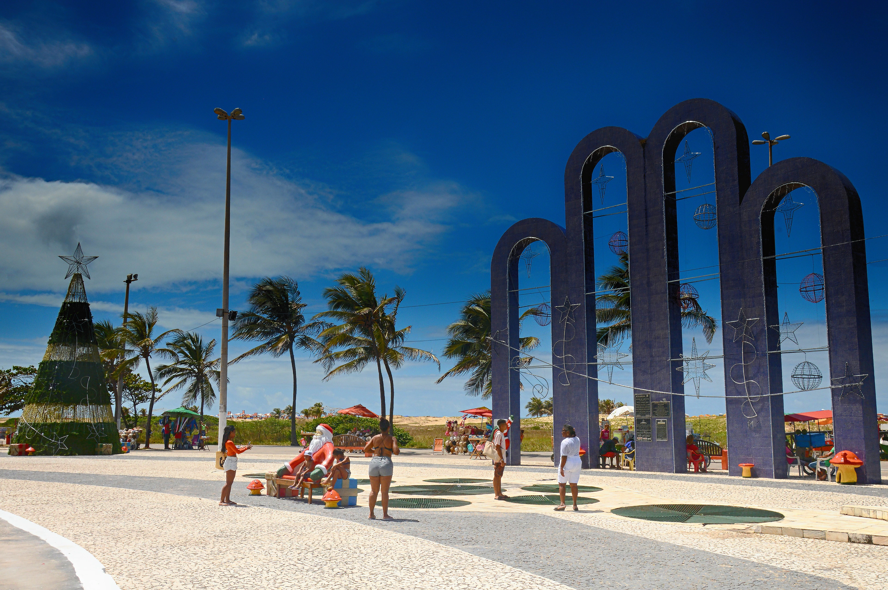

Praia de Atalaia

Na orla de Atalaia existem opções de lazer como bares e casas de dança e música, além de barracas de água de coco e quadras de basquete, futebol, tênis e uma pista de skate. Dentro desse conjunto de belezas, vale destacar que essa orla, considerada uma das mais bonitas do Brasil, oferece aos cidadãos e turistas o que há de melhor em lazer e entretenimento.
Roteiro Turístico em 1 Dia
- Café da manhã em uma das barracas da orla.
- Caminhada até os Arcos da Atalaia para fotos.
- Visita ao Oceanário de Aracaju (Projeto Tamar).
- Almoço com frutos do mar.
- Tarde livre para banho de mar e esportes.
- Fim de tarde com água de coco observando o pôr do sol.